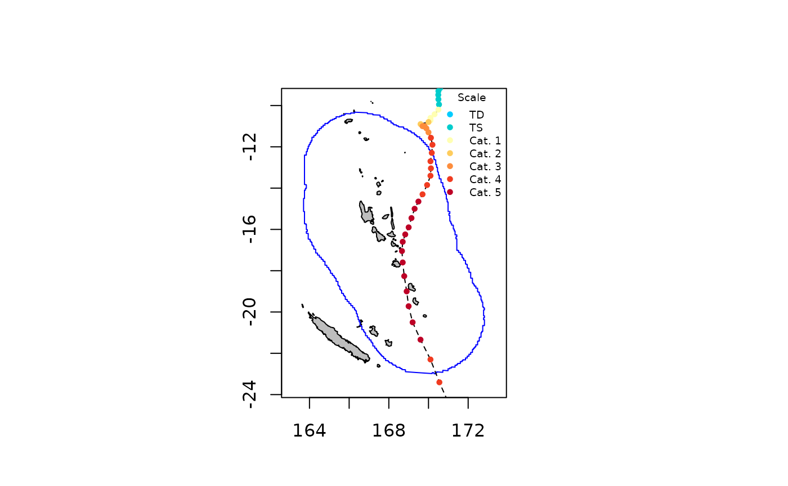
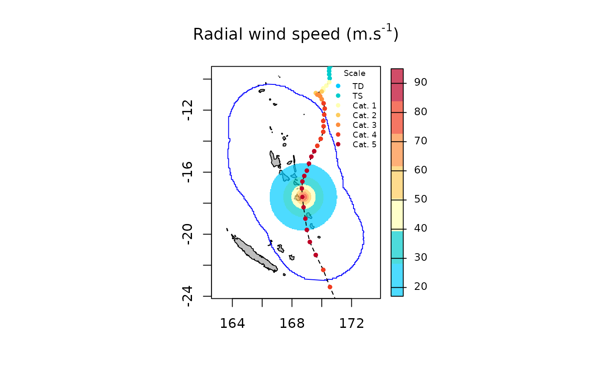
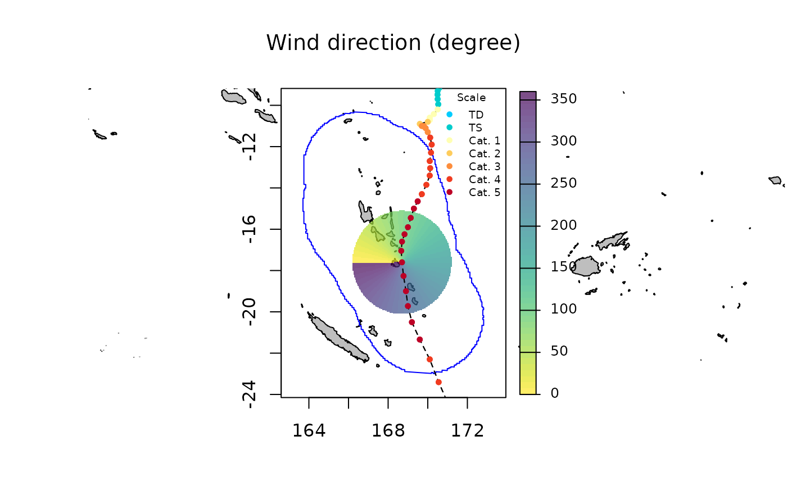
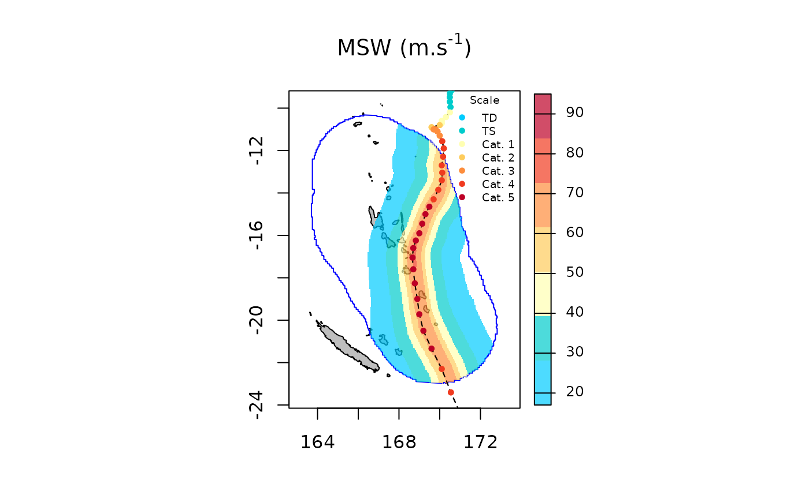
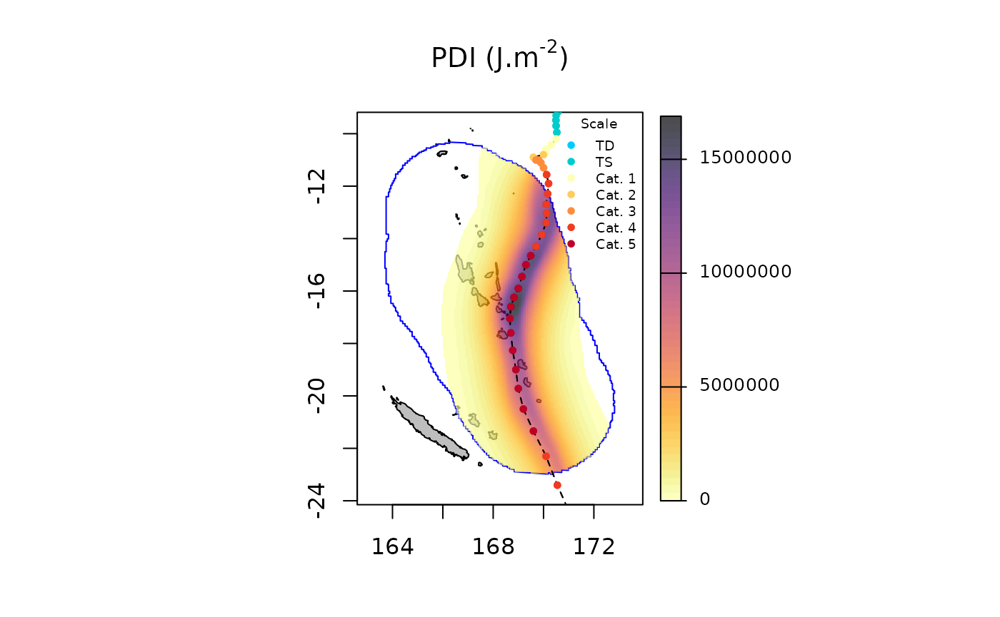
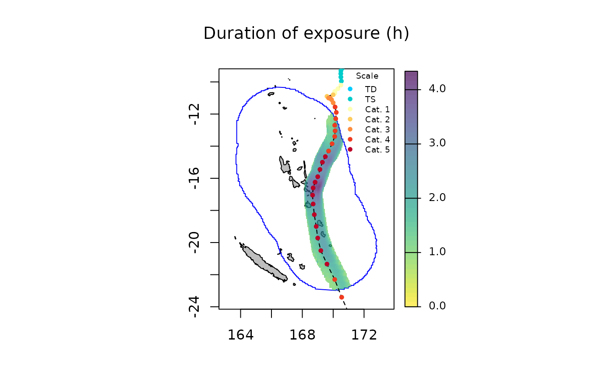
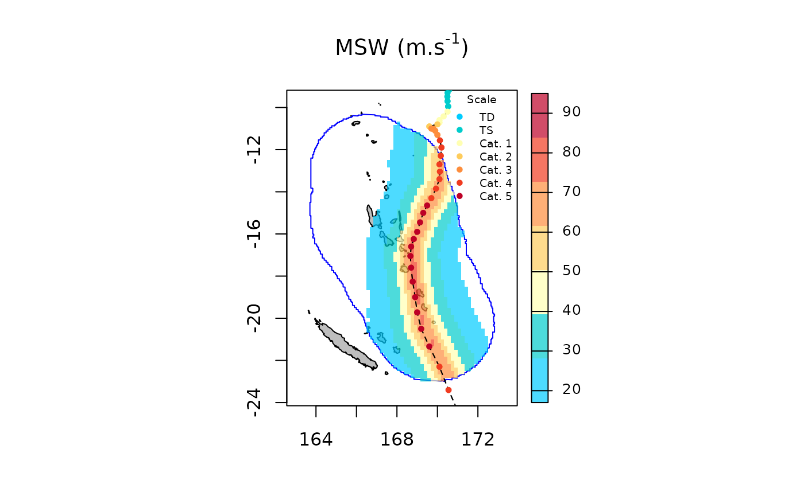

spatialBehaviour
2023-03-25
SpatialBehaviour.RmdThe spatialBehaviour() function allows computing wind
speed and direction for each cell of a regular grid (i.e., a raster) for
a given tropical cyclone or set of tropical cyclones. The
product="Profiles" argument allows producing 2D wind fields
during the lifespan of the cyclone at a temporal resolution of up to 15
minutes. The spatialBehaviour() function also allows to
compute three associated summary statistics: the maximum sustained wind
speed (product="MSW"), the power dissipation index
(product="PDI") and the duration of exposure to winds
reaching defined speed thresholds along the life span of the cyclones
(product="Exposure"). Then the plotBehaviour()
and the writeRast() functions can be used to visualise and
export the output. In the following example we use the
test_dataset provided with the package to illustrate how
cyclone track data can be used to compute, plot, and export 2D wind
field profiles or summary statistics.
Computing and plotting spatialBehaviour products
We can compute the behaviour of winds generated by the topical cyclone Pam (2015) near Vanuatu. First, track data are extracted as follows:
sds <- defDatabase()## === Loading data ===
## Open database... /home/runner/work/_temp/Library/StormR/extdata/test_dataset.nc opened
## Collecting data ...
## === DONE ===
st <- Storms(sds=sds,loi = "Vanuatu", names = "PAM",verbose=0)
plotStorms(st)
Wind profiles
Using track data and the spatialBehaviour() function
with the product="Profiles argument we can generate 2D wind
fields at any time as follows:
pf <- spatialBehaviour(st,product="Profiles",verbose=0)
pf## class : SpatRaster
## dimensions : 304, 219, 114 (nrow, ncol, nlyr)
## resolution : 0.04166667, 0.04166667 (x, y)
## extent : 163.7083, 172.8333, -23, -10.33333 (xmin, xmax, ymin, ymax)
## coord. ref. : lon/lat WGS 84
## source(s) : memory
## names : PAM_Speed_28, PAM_S~_28.1, PAM_S~_28.2, PAM_Speed_29, PAM_S~_29.1, PAM_S~_29.2, ...
## min values : 5.927, 2.302, 3.807, 3.087, 0.848, 2.971, ...
## max values : 61.110, 63.420, 64.483, 63.610, 64.753, 65.017, ...The function returns a SpatRaster object with two
rasters, one for the wind speed and one for the wind direction, for each
observation or interpolated observation. Rasters’ names follow the
following terminology, the name of the storm in capital letters, “Speed”
or “Direction”, and the index of the observation, separated by
underscores. Note that actual observations have entire indices (e.g.,
41, 42, …) while interpolated observation have decimals (e.g., 41.1,
41.2, …). Most tropical cyclone track data sets are based on
observations gathered every 3 or 6 hours. Therefore, to be able to
compute wind fields every 1 hour, the observations are interpolated.
Wind speed and direction profiles at the 41th observation can be plotted as follows:
plotBehaviour(st,pf$PAM_Speed_41)
plotBehaviour(st,pf$PAM_Direction_41)
Summary statisics
The spatialBehaviour() function can compute the
different products (i.e., "Profiles",
"MSW", "PDI", "Exposure") either
separately or together. Here, we compute all three summary statistics
together as follows:
ss <- spatialBehaviour(st,product=c("MSW","PDI","Exposure"),verbose=0)
ss## class : SpatRaster
## dimensions : 304, 219, 8 (nrow, ncol, nlyr)
## resolution : 0.04166667, 0.04166667 (x, y)
## extent : 163.7083, 172.8333, -23, -10.33333 (xmin, xmax, ymin, ymax)
## coord. ref. : lon/lat WGS 84
## source(s) : memory
## names : PAM_MSW, PAM_PDI, PAM_E~re_18, PAM_E~re_33, PAM_E~re_42, PAM_E~re_49, ...
## min values : 13.7870, 5.241304, 1.00000, 1.00000, 1.000000, 1.000000, ...
## max values : 73.9045, 4692.619898, 30.90083, 14.70248, 9.446281, 6.826446, ...The spatialBehaviour() function returns a
SpatRaster object with eight rasters: one for the maximum
sustained wind speed ("MSW"), one for the power dissipation
index ("PDI"), and one for each of the six defaults wind
thresholds values set for the duration of exposure
("Exposure").
names(ss)## [1] "PAM_MSW" "PAM_PDI" "PAM_Exposure_18" "PAM_Exposure_33"
## [5] "PAM_Exposure_42" "PAM_Exposure_49" "PAM_Exposure_58" "PAM_Exposure_70"By default, the function returns the duration of exposure (in hours)
to wind speeds above the thresholds used by the Saffir-Simpson hurricane
wind scale (i.e., 18, 33, 42, 49, 58, and 70 \(m.s^{-1}\)). This can be change using the
wind_threshold argument.
The maximum sustained wind speed can be plotted as follows:
plotBehaviour(st,ss$PAM_MSW)
The power dissipation index can be plotted as follows:
plotBehaviour(st,ss$PAM_PDI)
The duration of exposure to wind stronger than 58 \(m.s^{-1}\) (i.e., Saffir-Simpson’s categories 4 and 5) can be plotted as follows:
plotBehaviour(st,ss$PAM_Exposure_58)
Spatio-temporal resolution
As in the WorldClim database (https://worldclim.org/data/worldclim21.html) four
spatial resolutions are available. By default the spatial resolution is
set to 2.5 min (~4.5 km at the equator), but a finer spatial resolution
of 30 s (~1 km at the equator) and coarser spatial resolutions of 5 min
(~9 km at the equator) or 10 min (~18.6 km at the equator) can be set
using the space_res argument. The temporal resolution is
set to 1 hour by default but finer spatial resolution of 0.75, 0.50, or
0.25 hour can be set using the temp_res argument. Maximum
sustained wind speed can be computed at a 10 min spatial resolution and
a 30 min temporal resolution as follows:
ss <- spatialBehaviour(st,product=c("MSW"),verbose=0,space_res="10min",temp_res=0.5)
plotBehaviour(st,ss$PAM_MSW)
Exporting spatialBehaviour products
The spatialBehaviour() function returns rasters stored
in a SpatRaster object than can be exported either in
“.tiff” or “.nc” (NetCDF) formats using the writeRast()
function. Here, we export the maximum sustained wind speed in the
working directory as follows:
writeRast(ss$PAM_MSW, format=".tiff")